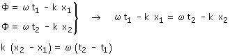
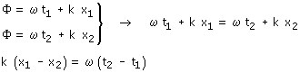

| Sentido de propagación En el instante t1, en la posición x1,
la fase tiene un cierto valor. Fase: ω·t - k·x  Como el segundo miembro es positivo, el primero también tendrá que serlo luego x2 > x1, la onda se propaga en sentido de x cre-ciente Se obtiene el mismo resultado si la fase es: k·x - ω·t Fase: ω·t + k·x  Como el segundo miembro es positivo, el primero también tendrá que serlo luego x2 < x1 ,la onda se propaga en sentido de x de-creciente Se obtiene el mismo resultado si la fase es: k·x + ω·t |